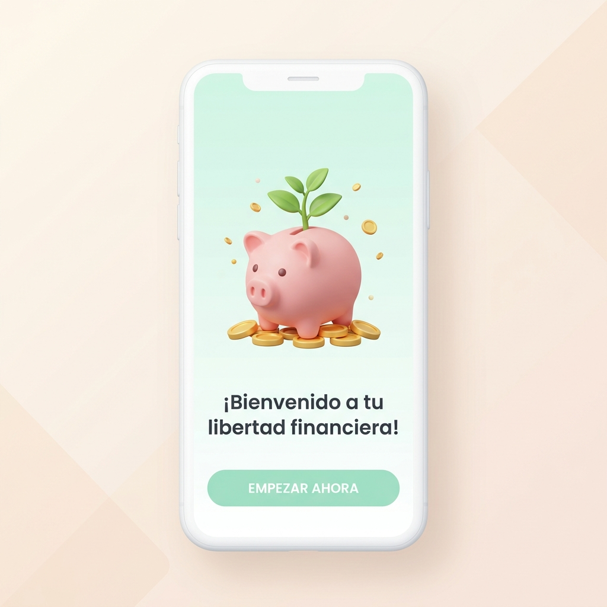
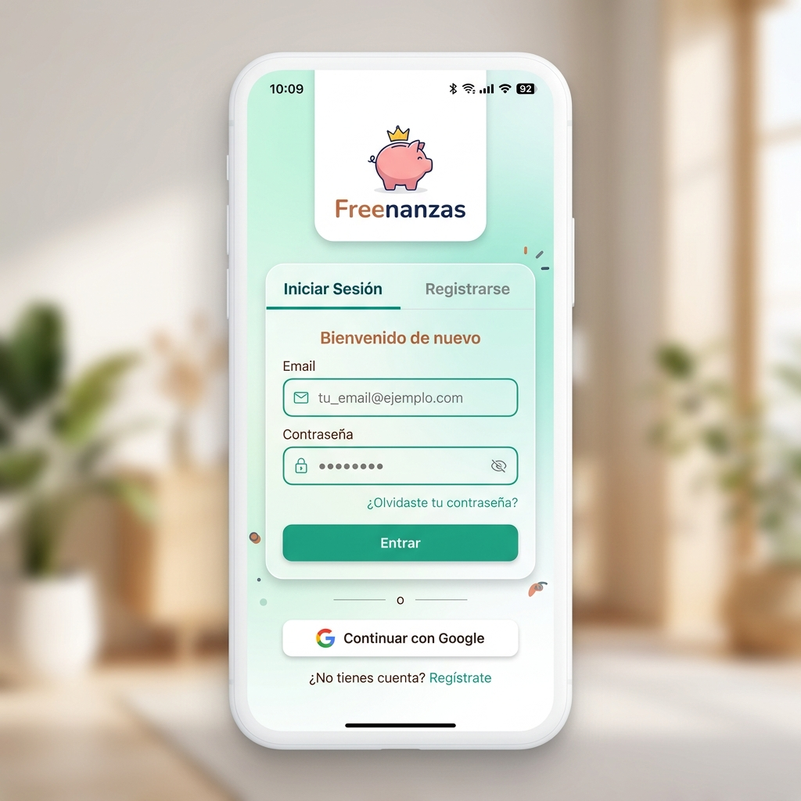
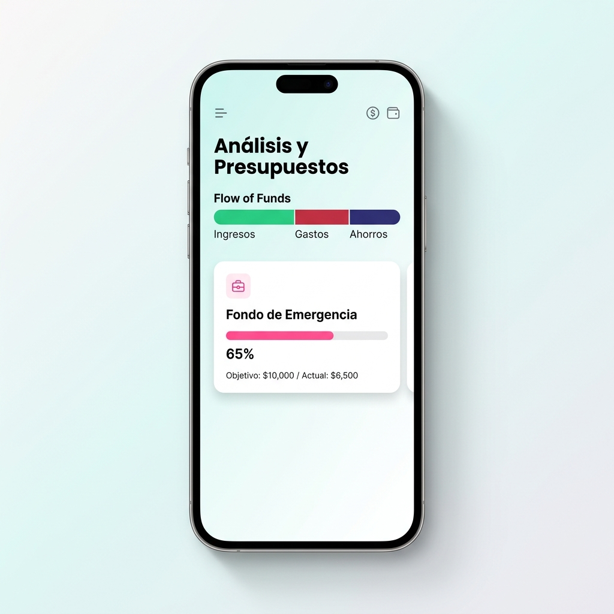
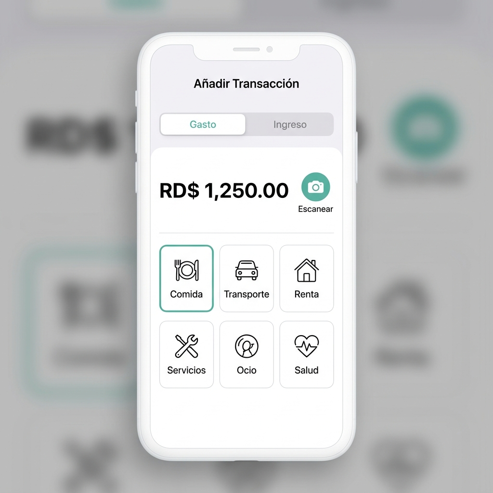
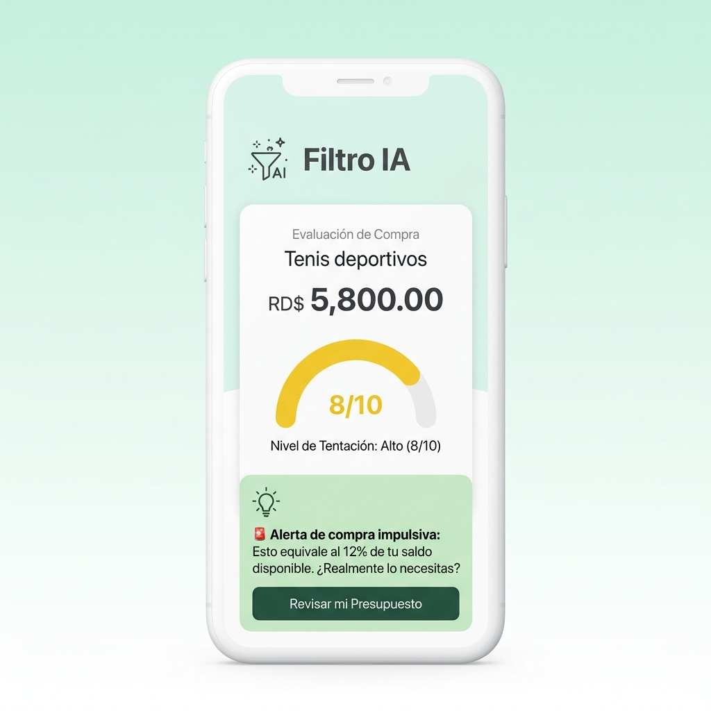
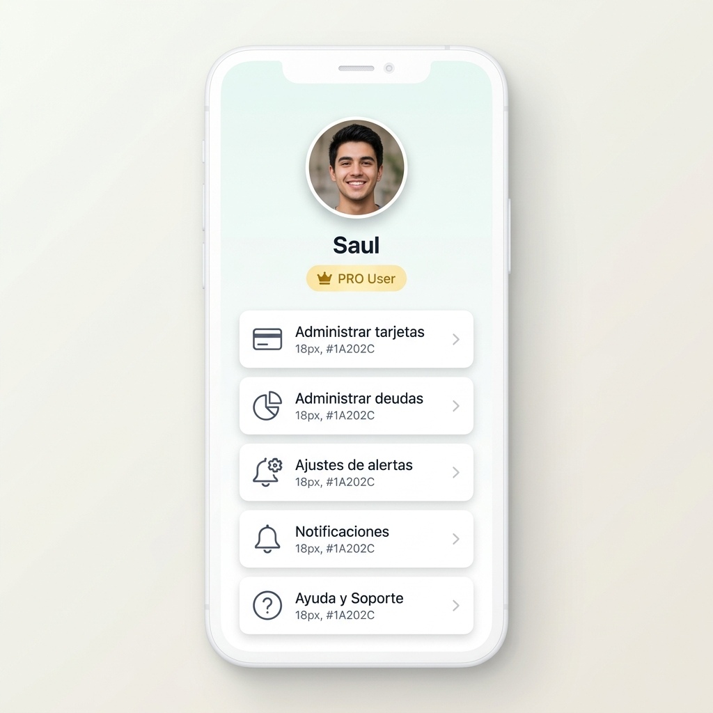

Manual de Usuario de Freenanzas APP
Gestión inteligente de finanzas y libertad financiera
Índice General
- 1. Introducción Pág. 3
- 2. Requisitos para usar la aplicación Pág. 3
- 3. Primer acceso Pág. 4
- 4. Inicio de sesión y registro Pág. 4
- 5. Pantalla principal Pág. 5
- 6. Navegación general Pág. 5
- 7. Funcionalidades principales Pág. 6
- 8. Flujos paso a paso Pág. 7
- 9. Configuración del usuario Pág. 9
- 10. Preguntas frecuentes Pág. 9
- 11. Solución de problemas Pág. 10
- 12. Glosario Pág. 10
- 13. Soporte Pág. 11
- 14. Anexos Pág. 11
1. Introducción
¡Hola! Te damos la más cálida bienvenida a Freenanzas APP, tu nuevo planificador financiero personal. Sabemos que gestionar el dinero puede parecer complicado. Por eso hemos diseñado una aplicación amigable, simple y optimista para ayudarte a tomar el control de tus finanzas personales sin estrés.
Bajo la regla del ahorro conductual y con el apoyo de nuestra Inteligencia Artificial (IA), Freenanzas te ayuda a entender exactamente a dónde va tu dinero y te enseña a crear hábitos de ahorro sólidos en tu moneda local (RD$).
2. Requisitos para usar la aplicación
Para garantizar el correcto funcionamiento de Freenanzas APP en tu dispositivo móvil o computadora, asegúrate de cumplir con los siguientes requisitos:
- Navegador Web: Google Chrome, Apple Safari, Mozilla Firefox o Microsoft Edge actualizados a su última versión estable.
- Cámara de fotos: Resolución mínima de 5MP con autoenfoque (esencial para el escaneo de facturas por IA).
- Conexión a Internet: Conexión móvil activa de datos (3G/4G/5G) o Wi-Fi estable para realizar consultas y procesar recibos.
- Registro previo: Una cuenta activa de correo electrónico o una cuenta Google válida.
- Permisos del Sistema: Dar permiso de uso de Cámara y almacenamiento al abrir el escáner de facturas.
3. Primer acceso
Al abrir la aplicación por primera vez, verás el asistente de inducción u **onboarding**. Este te guiará en tres simples diapositivas sobre los tres pilares de Freenanzas:
- El dinero bajo control: Qué es el balance disponible y cómo te ayuda a gastar con tranquilidad.
- Clasificación Inteligente (Regla 50/30/20): Distribuir tus ingresos entre necesidades, gustos y ahorro protegido.
- Metas financieras tangibles: Cómo definir tus metas y avanzar paso a paso.
Desliza lateralmente para navegar por las pantallas de bienvenida hasta llegar al botón final "Comenzar".
4. Inicio de sesión y registro

Freenanzas ofrece dos métodos sencillos y seguros para ingresar a la plataforma:
Registro e Ingreso Rápido con Google
Es la forma más recomendada. Pulsa en "Continuar con Google", selecciona tu cuenta de correo y el sistema se encargará de gestionar tu acceso seguro sin contraseñas adicionales.
Acceso Tradicional (Email y Contraseña)
Si prefieres usar un correo único, ve a la pestaña "Registrarse", rellena tus datos personales y una contraseña fuerte. En los siguientes inicios de sesión, solo deberás ingresar tus credenciales en la pestaña "Iniciar Sesión".
5. Pantalla principal
El Dashboard principal es el corazón de la aplicación. Te presenta un resumen visual simple de tus finanzas para reducir el estrés del control financiero:
- Balance "Para Gastar": Es tu saldo libre real. Muestra el dinero que te queda tras descontar tus metas de ahorro y tus facturas recurrentes del mes. ¡Gasta este monto sin remordimientos!
- Balance "Mis Ahorros": Dinero protegido reservado para tus proyectos futuros y tu Fondo de Emergencia.
- Ocultar Monto (👁️): Pulsa el icono de ojo para enmascarar tus saldos, ideal si usas la app en público.
- Insight de IA: Mensajes cortos y motivadores que aparecen en una tarjeta superior, dándote consejos prácticos basados en tus hábitos de la semana.

6. Navegación general

La barra inferior o dock te permite moverte entre los módulos principales de Freenanzas:
| Icono | Módulo | Propósito |
|---|---|---|
| home | INICIO | Ver tu dinero disponible, ahorros y consejos diarios de la IA. |
| pie_chart | ANÁLISIS | Definir presupuestos (Regla 50/30/20) y ver metas. |
| 📷 | CÁMARA | Botón central para escanear facturas e ingresar gastos automáticamente. |
| account_balance | CARTERA | Historial de transacciones y búsquedas con filtros rápidos. |
| person | PERFIL | Administrar tarjetas, deudas, alertas y solicitar soporte. |
7. Funcionalidades principales
7.1. Registro de Ingresos y Gastos
Registra tus movimientos en segundos. Puedes pulsar los botones rápidos en Inicio o abrir el formulario desde el botón central.
- Registro manual: Ingresa el monto, escoge la categoría y guarda.
- Escaneo con IA (Premium): Toma una foto a tu factura o recibo. La IA de Google Gemini extraerá los datos principales e insertará los campos correspondientes de forma automática.
- Pre-validación de duplicados: Para evitar cargar dos veces el mismo gasto (por ejemplo, si subes el mismo recibo sin querer), la app te avisará si existe una transacción idéntica en las últimas 24 horas.
7.2. Filtro IA Preventivo
Es tu freno antes de compras compulsivas. Al ingresar qué quieres comprar y su precio, el Filtro IA analiza tus deudas, presupuestos y ahorros actuales y te devuelve una recomendación en formato semáforo:
- Verde 🟢 Adelante con la compra. No compromete tu salud financiera.
- Amarillo 🟡 Piénsalo dos veces. El gasto afectará levemente tus metas.
- Rojo 🔴 Alerta. El gasto pone en riesgo el dinero para tus servicios fijos.
7.3. Presupuestos y Metas (50/30/20)
Divide tus ingresos bajo la regla 50/30/20 (50% Necesidades, 30% Deseos y 20% Ahorros). Freenanzas te muestra el progreso de tus metas con una barra interactiva de porcentaje a medida que registras transacciones bajo la categoría "Ahorro".
7.4. Gestión de Tarjetas de Crédito
Evita el pago de intereses no deseados vinculando tus tarjetas de crédito en el perfil de usuario. Define su límite de crédito, fecha de corte y pago. Al registrar transacciones, marca la opción "¿Pago con Tarjeta?" para ver tu consumo acumulado y el límite restante en tiempo real.
7.5. Control de Préstamos y Deudas
Lleva un registro de préstamos activos ingresando la tasa anual y tu cuota mensual. Freenanzas te emitirá sugerencias inteligentes en el dashboard si detecta tasas superiores al 25% anual.
7.6. Gastos Recurrentes
Registra pagos fijos de suscripciones, alquiler o luz. Freenanzas restará preventivamente este dinero del saldo libre del mes, asegurándote que no gastes el dinero de tus facturas.
7.7. Asesor IA
Un chat privado con el consultor financiero inteligente Gemini. Puedes pedirle consejos sobre ahorro, reducción de gastos o ideas para salir de deudas basándose únicamente en tus datos históricos anónimos.
8. Flujos paso a paso
Flujo A: Registro e Inicio de Sesión
- Abre la aplicación. Si es tu primera vez, pasa las pantallas de onboarding y presiona "Comenzar".
- En la pantalla de acceso, selecciona la pestaña "Registrarse" o pulsa "Continuar con Google".
- Si eliges registro clásico, digita tu nombre, correo y clave y pulsa "Registrarme".
- Verifica tu correo haciendo clic en el enlace recibido.
Flujo B: Configuración del Presupuesto y Metas de Ahorro
- Presiona el botón **ANÁLISIS** (icono de gráfico) en el menú inferior.
- Selecciona **Configurar Presupuesto** e ingresa tus ingresos netos mensuales del mes (ej: RD$ 40,000).
- Haz clic en **Crear Meta de Ahorro**. Escribe el nombre (ej. *Fondo de Emergencia*), el monto total (ej. *RD$ 15,000*) y selecciona el mes de cumplimiento.
- Presiona **Guardar**. La app creará tu barra de metas dinámicas.

Flujo C: Registro de Gasto con Escaneo IA (PRO)
- Pulsa el botón flotante central de la **Cámara (📷)**.
- Toma una foto de tu recibo físico, asegurando que la luz sea buena y el monto final esté centrado.
- El sistema mostrará un progreso de análisis. En 3 segundos completará los campos de: Monto, Nombre del comercio, RNC e identificará la categoría (ej: "Comida" para supermercado).
- Revisa los datos. Si todo es correcto, haz clic en **Guardar Transacción**.

Flujo D: Evaluación de compra con Filtro IA
- En la pantalla de inicio, selecciona la herramienta **Filtro IA**.
- Escribe el producto a comprar (ej: *Zapatos casuales*) y su precio (ej: *RD$ 3,500*).
- Indica tu nivel de tentación o deseo en la barra del 1 al 10.
- Haz clic en **Analizar Compra**. El sistema te devolverá una tarjeta en color con su recomendación final.

Flujo E: Registro de Tarjeta de Crédito y Gasto Asociado
- Ve a la pestaña **PERFIL** en el menú de navegación inferior.
- Selecciona **Administrar Tarjetas de Crédito** y pulsa en **Nueva Tarjeta**.
- Ingresa el nombre de la tarjeta, límite total, fecha de corte y fecha límite de pago. Presiona Guardar.
- Para asociar un gasto: Abre el módulo de agregar transacción, ingresa el monto, activa la opción **"¿Pago con Tarjeta?"**, selecciona tu tarjeta de la lista y guarda.
Flujo F: Cierre de Sesión
- Selecciona la pestaña **PERFIL** en el dock inferior.
- Desplázate hasta el final de las opciones.
- Presiona el botón rojo **"Cerrar Sesión"**. Volverás a la pantalla de bienvenida de la aplicación.
9. Configuración del usuario
Para personalizar Freenanzas a tu medida, la sección de Perfil te permite ajustar lo siguiente:
- Recordatorios diarios de registro: Activa el recordatorio diario por notificaciones push y elige la hora ideal (por ejemplo, 9:00 PM) para que no olvides registrar las compras del día.
- Administración de suscripción PRO: Administra los pagos de tu membresía a través del paywall seguro de la app conectado con los planes de PayPal.
- Información legal: Consulta los términos de uso, políticas de datos y las notas de descargo de responsabilidad sobre consejos financieros de Inteligencia Artificial.

10. Preguntas frecuentes
| Pregunta | Respuesta Oficial de la App |
|---|---|
| ¿Mis datos bancarios están seguros? | Sí, porque Freenanzas no se conecta a tu banco. Todo registro de transacciones es voluntario por parte del usuario. Los datos guardados en Firestore están cifrados. |
| ¿Por qué algunas funciones están bloqueadas con candados? | El escaneo de facturas por cámara con IA y el Asesor IA conversacional son exclusivos para los miembros del plan Freenanzas PRO. |
| ¿El Filtro IA sustituye a un asesor financiero humano certificado? | No. Las recomendaciones del Filtro y Asesor IA son análisis basados en la economía conductual para mitigar compras impulsivas. Revisa los avisos legales en Perfil. |
11. Solución de problemas
Si experimentas algún comportamiento inesperado en la aplicación, consulta estas soluciones comunes:
Problemas con el Escáner de Cámara
- Síntoma: Al presionar el icono de la cámara la pantalla queda en negro o da error.
- Causa probable: La aplicación no tiene permisos de cámara concedidos en tu sistema operativo.
- Solución: Ve a la configuración de tu celular, entra a Aplicaciones, busca "Freenanzas" y asegúrate de habilitar los permisos de Cámara.
Errores de Lectura de Recibos por IA
- Síntoma: El monto extraído no coincide con la factura real o no detecta el comercio.
- Causa probable: Luz deficiente, factura doblada o cámara fuera de foco.
- Solución: Coloca la factura plana sobre un fondo de color contrastante, asegúrate de tener buena luz y de que las letras del recibo sean legibles en la pantalla antes de capturar.
12. Glosario
Para facilitar tu comprensión de los términos utilizados en Freenanzas, a continuación detallamos sus definiciones:
- Para Gastar: Saldo disponible después de descontar de tus ingresos del mes tus gastos fijos (recurrentes) y tus metas de ahorro activas.
- Mis Ahorros: Saldo protegido que apartas de tu disponible general. Este dinero está enlazado a tus metas de ahorro creadas.
- RNC: Registro Nacional de Contribuyentes en República Dominicana. Es el número tributario que la IA lee en las facturas para clasificar e identificar el comercio.
- Gasto Hormiga: Pequeñas compras diarias (cafés, dulces, propinas) que de forma individual parecen insignificantes pero que en conjunto representan una fuga importante en tu presupuesto mensual.
- Regla 50/30/20: Modelo de finanzas personales que recomienda destinar un 50% de tus ingresos a necesidades primarias, un 30% a gustos y deseos y un 20% a ahorros de mediano/largo plazo.
- PWA (Progressive Web App):** Tecnología web que te permite agregar Freenanzas a la pantalla de inicio de tu celular como si fuera una app nativa, funcionando de forma rápida y sin ocupar espacio.
13. Soporte
Si experimentas un problema que no se encuentra resuelto en este manual de usuario, por favor ponte en contacto con nuestro equipo de atención:
- Correo Electrónico Oficial: saul640@gmail.com
- Horario de Atención: Lunes a Viernes de 8:00 AM a 6:00 PM (GMT-4, Hora de República Dominicana).
- Información a incluir en tu reporte: Tu nombre completo, correo registrado en la aplicación, modelo de celular y una descripción detallada del error con capturas de pantalla adjuntas.
14. Anexos
Información técnica sobre el análisis de documentación y la versión de Freenanzas APP:
- Versión de la Documentación: Manual de Usuario Oficial v1.0.
- Fecha de Elaboración: Junio de 2026.
- Limitaciones de Análisis: El análisis de las integraciones de pasarelas de pago de PayPal se realizó utilizando credenciales y planes Sandbox según la configuración del entorno local. Para producción real, se debe validar el Runbook y la Checklist de pagos del repositorio.